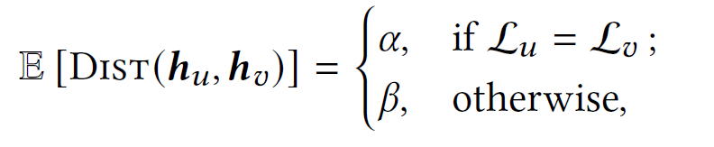

CARL-G: Clustering-Accelerated Representation Learning on Graphs
![]()
Outline
1️⃣ Overview
2️⃣ Architecture & Training
3️⃣ Results
4️⃣ Analysis
5️⃣ Possible Extensions
Overview
- Overview
Overview
- Existing literature on graph SSL: contrastive and non-contrastive methods;
- The authors propose CARL-G1, a CVI-based graph SSL algorithm;
- CARL-G is simple, fast and computes more expressive representations for downstream node classification, clustering and similarity search
Architecture & Training
Notation
CVIs
CARL-G Forward
Modified VRC and SIL
Clustering Method
Notation
- Graph \(G = (V,E)\), with \(n = |V|\);
- Node features \(X \in \mathbb{R}^{n \times f}\)
- Node Embeddings: \(H = [\vec{h}_1,...,\vec{h}_n] \in \mathbb{R}^{n \times d}\)
- Adjacency matrix \(A \in \{0,1\}^{n \times n}\)
- Partition: \(C = \{C_1,...,C_c\}\)
- Cluster Assignments: \(\mathcal{U} \in \{1,...,c\}^{n}\), while \(\mathcal{U}_u\) is the assignment of node \(u\);
- Global Centroid: \(\vec{\mu} = \frac{1}{c}\sum\limits_{u \in V}\vec{h}_u\)
- i-th Cluster Centroid: \(\vec{\mu}_i = \frac{1}{c}\sum\limits_{u \in C_i}\vec{h}_u\)
CVIs
Cluster Validation Indices are measures of the quality of a partition \(C\) that don’t require ground truth clustering;
Example: Silhouette
\[\text{SIL}(C) := \frac{1}{n}\sum\limits_{u \in V}s(u)\] Where \[s(u) = \frac{b(u) - a(u)}{\text{max}(a(u),b(u))}\] and
\[\begin{split} a(u) &= \frac{1}{C_{\mathcal{U}_u} - 1}\sum\limits_{v \in C_{\mathcal{U}_u}\setminus u} \text{DIST}(\vec{h}_u, \vec{h}_v) \\ b(u) &= \min\limits_{i \neq \mathcal{U}_u} \frac{1}{|C_i|}\sum\limits_{v \in C_i}\text{DIST}(\vec{h}_u, \vec{h}_v) \end{split}\]
CARL-G Forward
- \(H = \text{ GCN}(X,A)\)
- \(Z = \text{ MLP}(H)\)
- \(C = \textit{ k-means}(Z)\)
- \(\text{Loss } = CVI(Z;C)\)
MLP discarded for downstream tasks.
Modified VRC and SIL
- k-means may miscluster: \[ \text{L}_{\text{SIL}} = |\tau_{\text{SIL}} - \text{SIL}(C)|, \qquad \text{L}_{\text{VRC}} = |\tau_{\text{VRC}} - \text{VRC}(C)| \qquad(1)\] Where \(\tau_{\text{SIL}} \in [-1,1] \land \tau_{\text{VRC}} [0, +\infty]\)
- \(\text{SIL}(C) \sim O(n^2) \implies\) Simplified Silhouette Loss \(L_{\text{SIM}}\): \[a(u) = \text{DIST}(\vec{h}_u, \vec{\mu}_{\mathcal{U}_u}) , \qquad b(u) = \min\limits_{i \neq \mathcal{U}_u} \text{DIST}(\vec{h}_u, \vec{\mu}_i) \qquad(2)\]
Clustering Method
- k-means and k-medoids are tested;
- k-means finds optimal \(c\) centroids \(\vec{\mu}_{1,...,c}\) s.t.: \[\underset{C}{\operatorname{argmin}} \sum\limits_{i=1}^{c}\sum_{\vec{x}\in C_i} \text{DIST}(\vec{x}, \vec{\mu}_i)\] In CARL-G, centroids are carried over between epochs.
Results
Overview
Node Classification
Node Clustering
Node Similarity
Overview
Three variants of CARL-G:
\(CARL-G_{\text{SIL}}\) (see Equation 1)
\(CARL-G_{\text{VRC}}\) (see Equation 1)
\(CARL-G_{\text{SIM}}\) (see Equation 2)
Evaluated over three tasks:
- (Multiclass) Node Classification: OneVsRest Logistic Regression over frozen CARL-G embeddings on 5 datasets;
- Node Clustering: NMI and cluster homogeneity between k-means over \(H\) and label-induced cluster assignments;
- Node Similarity Search: Hits@K measure of same-labels within each cluster for every node.
Node Classification
Node Clustering
Similarity Search
Analysis
Margin Loss
Ablation study
Margin Loss
Can show that contrastive Margin Loss \(\iff\) Mean Silhouette
Mean Silhouette
\[L_{MS}(u) = -(b_{MS}(u) - a(u))\] Where \[b_{MS}(u) = \frac{1}{c-1}\sum\limits_{j \neq i} \frac{1}{|C_j|}\sum\limits_{v \in C_j} \text{DIST}(\vec{h}_u,\vec{h}_v)\]
Margin Loss
\[\text{ML}(u) = \frac{1}{|N(u)|}\sum\limits_{v \in N(u)}\text{DIST}(\vec{h}_u,\vec{h}_v) - \frac{1}{|V \setminus N(u) \cup \{u\}|} \sum\limits_{t \notin N(u)} \text{DIST}(\vec{h}_u,\vec{h}_t)\]
Margin Loss
Also defining:

Margin Loss
Claim: Given the above assumptions, the expected value of the simplified silhouette loss approaches that of the margin loss as ùëù → 1, ùëû → 0, and ùúñ, ùõø → 0.
Proof:
- Compute \(\text{E}[L_{MS}(u)] = \text{E}[a(u)] - \text{E}[b_{MS}(u)]\)
- Take the limit \(\lim\limits_{\epsilon,\delta \rightarrow 0} \text{E}[L_{MS}(u)]\)
- Compute \(\text{E}[\text{ML}(u)]\)
- Take the limit \(\lim\limits_{p \rightarrow 1,q \rightarrow 0} \text{E}[\text{ML}(u)]\) and note it coincides with 2.
Margin Loss
Observations:
- Mean Silhouette is minimized by model error rates \(\epsilon\) and \(\delta\), while Margin Loss depends on \(p\) and \(q\) which are immutable graph attributes;
- Mean Silhouette does not require negative sampling
Ablation study
- There is an optimal number of clusters \(c\);
- k-means works better than k-medoids;
- Extra structural information is not needed: \[\text{DIST}(\vec{h}_u, \vec{h}_v) = \lambda || \vec{h}_u - \vec{h}_v ||_2 + (1-\lambda)D_{uv}\]
Possible Extensions
DMoN & UCoDe
Soft Silhouette
DMoN & UCoDe
DMoN1:
\[\mathcal{Q} = \frac{1}{2m}\sum\limits_{ij}\left[A_{ij}- \frac{k_i k_j}{2m} \right]\delta(c_i,c_j) = \frac{1}{2m} \text{Tr}(C^TBC)\]
\[C = \text{softmax}(\text{GCN}(A,X))\]
\[\mathcal{L}_{\text{DMoN}} = -\frac{1}{2m} \text{Tr}(C^TBC) + \text{regularization}\]
UCoDe2:
\[C = \text{GCN}(A,X)\]
\[\mathcal{L}_{\text{UCoDE}} = - \frac{1}{2k}\sum\limits_{i = 1}^{k}y_i\ln(\text{Diag}(\sigma(\mathcal{Q} ))_i) - (1-y_{k+i})\ln(1-\text{Diag}(\mathcal{P}(\sigma(\mathcal{Q})))_i)\]
DMoN & UCoDe
Suggestions:
- Compare CARL-G with DMoN and UCoDe;
- Try \(\text{CARL-G}_{\text{Mod}}\) (weak);
Soft Silhouette
Introduced in Vardakas, Papakostas, and Likas (2024):
\[\text{Sf}(C,X) = \frac{1}{N}\sum\limits_{i = 1}^{N}\text{sf}(x_i)\]
Where, assuming \(x_i \in C_I\):
\[a_{C_I}(x_i) := \frac{\sum\limits_{j = 1}^{N} P_{C_I}(x_j) d(x_i,x_j)}{\sum\limits_{j=1,j\neq i}^{N}P_{C_I}(x_j)}, \qquad b_{C_I} := \min\limits_{J \neq I}a_{C_J}(x_i)\]
\[s_{C_I}(x_i) = \frac{b_{C_I}(x_i) - a_{C_I}(x_i)}{\max\{ a_{C_I}(x_i), b_{C_I}(x_i)\}}\]
\[\text{sf}(x_i) = \sum\limits_{i = 1}^{K}P_{C_I}(x_i)s_{C_I}(x_i)\]
Soft Silhouette
Suggested approach:
- \(H = \text{GCN}_H(A,X)\)
- \(C = \vec{\sigma}(\text{GCN}_C(A,X))\) where \(\vec{\sigma}\) is softmax or element-wise sigmoid;
- Optimize \(\text{Sf}(C,H)\) (\(\implies C^*, H^*\))
- Find optimal clustering by finding \(p\) s.t. \(\text{SIL}(\hat{C}^*)\) is maximum.